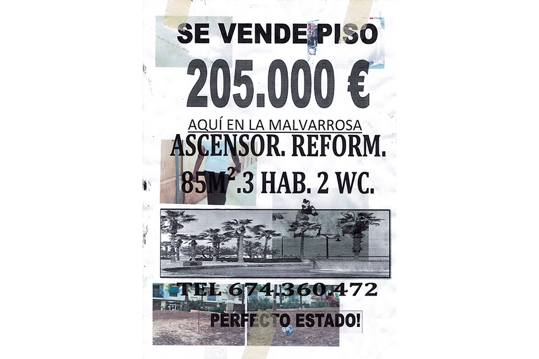
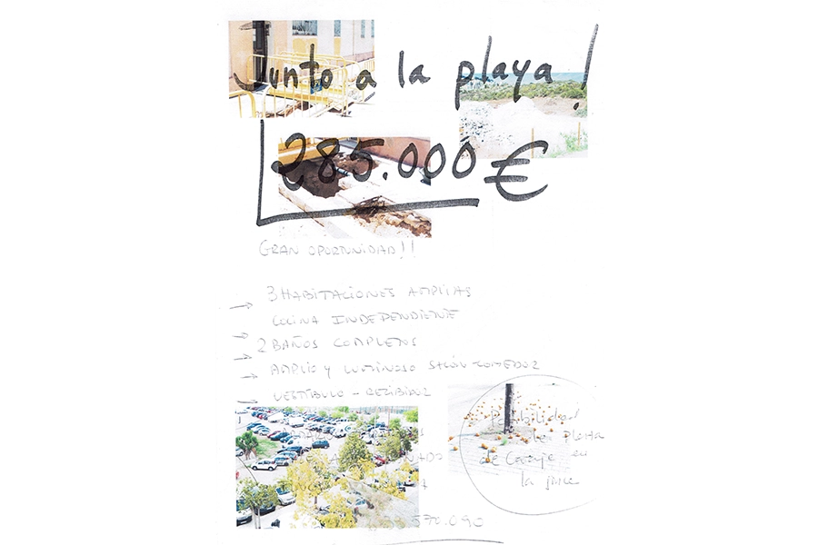
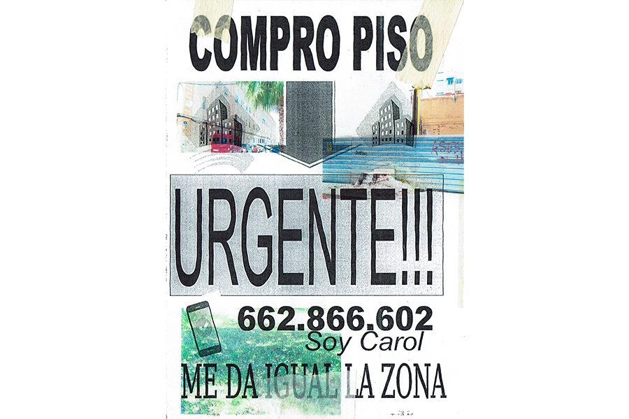
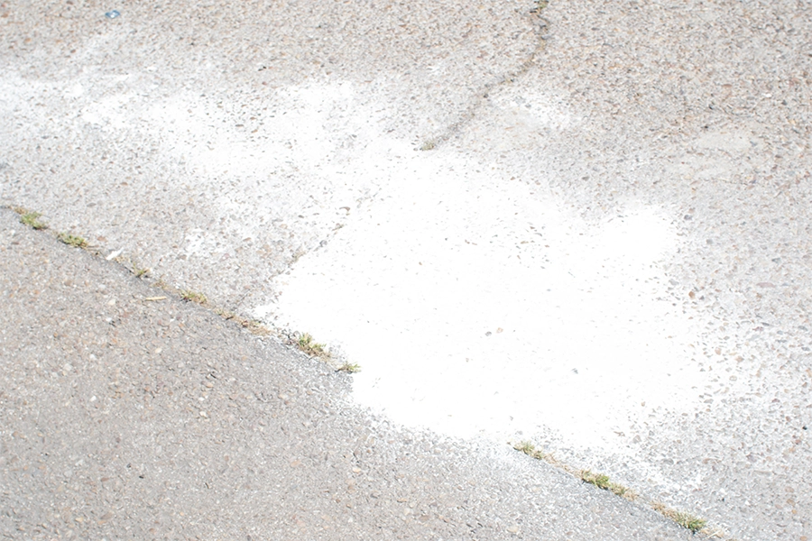

Compro piso a familia local

Compro piso a familia local

Compro piso a familia local

Compro piso a familia local

Compro piso a familia local
2024 (En desarrollo)
"Compro piso a familia local" es un proyecto que la autora está
realizando sobre la gentrificación y turistificación que está
sufriendo su barrio (La Malvarrosa) en Valencia. Este proceso está
generando la desaparación de los grupos, familias y negocios que
tradicionalmente han habitado el barrio en pos de turistas y negocios
orientados al turismo. Este proceso esta aumentando al igual los
precios de la vivienda.
Para desarrollar este proyecto está recopilando los carteles
realizados por inmobiliarias que buscan pisos en el barrio y que
aumentan la especulación y gentrificación y reimprimiendolos con
fotografías que la autora ha ido realizando del barrio y de sus
habitantes como documento gráfico de un barrio que cambia.